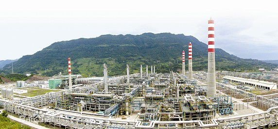
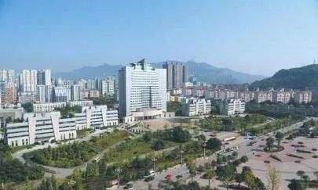

经济概况 |
 |
2018年，达州市实现地区生产总值（GDP）1690.17亿元，按可比价格计算，同比增长8.3%。其中，第一产业实现增加值326.24亿元，增长3.6%；第二产业603.91亿元，增长8.6%；第三产业（服务业）760.02亿元，增长10.2%。全市人均地区生产总值29627元，增长7.1%。
全社会固定资产投资达到1400.43亿元，同口径增长12.3%。其中，国有投资完成849.16亿元，增长8.3%；民间投资完成551.26亿元，增长19.3%。分产业看，第一产业投资65.96亿元，增长12.1%；第二产业投资282.35亿元，增长1.8%；第三产业投资1052.11亿元，增长15.6%。
全年全市民营经济增加值突破了1000亿元大关，达到1046.54亿元，增长8.4%，占GDP的比重达到61.9%，对GDP增长的贡献率高达62.5%，拉动GDP增长5.2个百分点。其中，第一产业增加值87.77亿元，增长1.8%；第二产业增加值520.23亿元，增长8.2%；第三产业增加值438.54亿元，增长10.1%。
全年居民消费价格指数（CPI）同比上涨2.3%，总体保持平稳。其中居住类增长3.4%，衣着类增长2.9%，医疗保健类增长2.6%，交通和通信类增长2.4%，教育文化和娱乐类增长2.1%，生活用品及服务类增长1.6%，食品烟酒类增长1.5%。全年工业品出厂价格指数（PPI）上涨5.6%。 |
第一产业 |
达州钢铁厂 |
| |
2018年，达州市全年粮食播种面积55.51万公顷，比上年下降1%。其中，水稻19.11万公顷，减少0.9%；玉米13.63万公顷，增长0.1%；薯类16.27万公顷，增长0.7%；油料种植面积13.43万公顷，增长0.4%；蔬菜种植面积8.57万公顷，增长1.9%。
全年粮食产量317.13万吨，比上年增加0.55万吨，增长0.2%；油料产量35.07万吨，增长1.6% 。
全年肉类总产量45.68万吨，比上年增长2.1%。其中猪肉产量30.32万吨，增长2.2%；牛肉产量3.53万吨，增长2.2%；羊肉产量1.81万吨，下降1.3%；禽肉产量9.52万吨，增长2.5%。全年水产品产量9.75万吨，增长2.5%；牛奶产量1.74万吨，增长8%。 |
 |
第二产业 |
达州经开区 |
| |
2018年，达州市全部工业增加值448.93亿元，比上年增长9.2%，其中规模以上工业增加值增长10.6%。在规模以上工业中，分轻重工业看，轻工业增长6.4%，重工业增长11.7%。分经济类型看，国有企业下降15.7%，集体企业增长5.4%，股份制企业增长11%，外商及港澳台商投资企业下降5%。
规模以上工业企业实现利润总额95.16亿元，比上年增长102.7%；实现利税155.79亿元，增长90.1%；资产负债率44.3%，下降0.2个百分点；流动资产周转率3.1次/年，降0.9次；成本费用利润率8.5%，增3.7个百分点；总资产贡献率14%，增3.7个百分点。
全社会建筑业实现增加值163.15亿元，比上年增长6.6%。全市有资质等级的建筑企业实现总产值515.56亿元，增长28.7%。
房地产开发投资完成156.70亿元，同比增长37.9%。商品房施工面积1206.19万平方米，增长20.8%；商品房销售面积516.00万平方米，增长27.0%；商品房待售面积71.23万平方米，下降16.2%，去库存效果明显。 |
|
第三产业 |
|
| |
2018年，达州市全年实现社会消费品零售总额889.70亿元，同比增长12.3%。
按消费所在地看，城镇市场实现零售额550.36亿元，增长12.4%；乡村市场实现零售额339.33亿元，增长12.1%。
按消费形态看，餐饮收入完成101.76亿元，增长14.9%；商品零售完成787.94亿元，增长12%。
从热点商品看，日用品类增长17.8%，汽车类销售额增长16.1%，家用电器和音像器材类增长16.1%，粮油、食品、饮料、烟酒类增长15.4%，服装、鞋帽、针纺织品类增长14.2%。
全年进出口总额8660万美元。其中，进口额395万美元；出口额8265万美元；净出口（出口减进口）7870万美元。外商直接投资合同项目2个，当年合同外资金额3095.4万美元。
2018年，全市地方公共财政收入101亿元，增长10%，高于GDP增速1.7个百分点，占GDP比重为5.98%；地方公共财政支出417.97亿元，增长7.4%。
年末金融机构人民币存款余额2927.09亿元，比年初增加125.15亿元，同比增长4.5%。其中，住户存款2055.08亿元，增长7.2%；非金融企业存款412.23亿元，下降4.6%；广义政府存款402.83亿元，增长11.3%。人民币贷款余额1502.91亿元，比年初增加224.99亿元，同比增长17.6%。其中，住户贷款693.48亿元，增长14.6%。
2018年，全市实现保费收入83.83亿元，同比下降0.6%。保费深度4.96%，同比下降0.37个百分点，保费密度1469.56元，同比增加247元。其中：人身险保费收入66.34亿元，下降1.8%；财产险保费收入17.49亿元，增长4%。赔款及给付合计28.2亿元，其中人身险赔款及给付合计18.01亿元，财产险（已决）赔款10.19亿元。
2018年，全市共接待游客2831万人次，增长27%。其中，莲花湖接待游客100万人次，洋烈水乡接待游客98万人次，红军公园接待游客84万人次，八台山景区接待游客77万人次，凤凰山接待游客74万人次。实现旅游收入208.86亿元，增长22%。 |
|
| |
|
| |
|
| |
|
|
| |
|
|